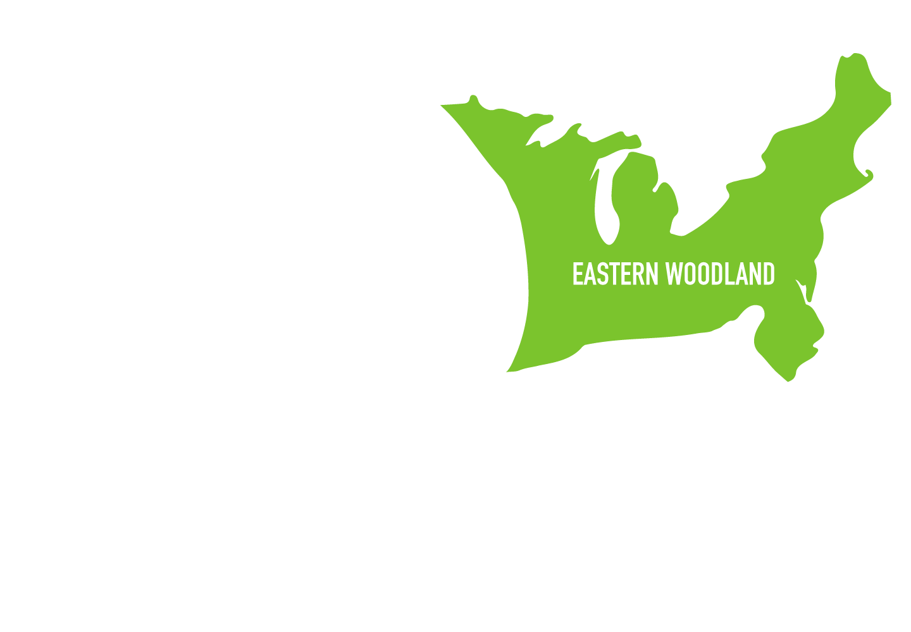
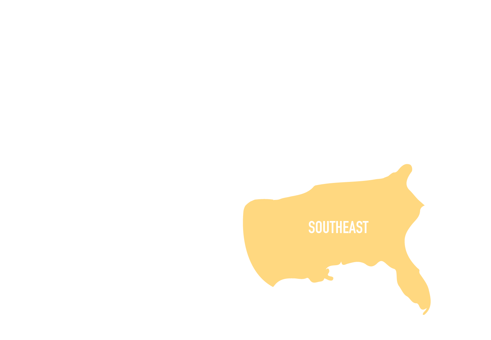
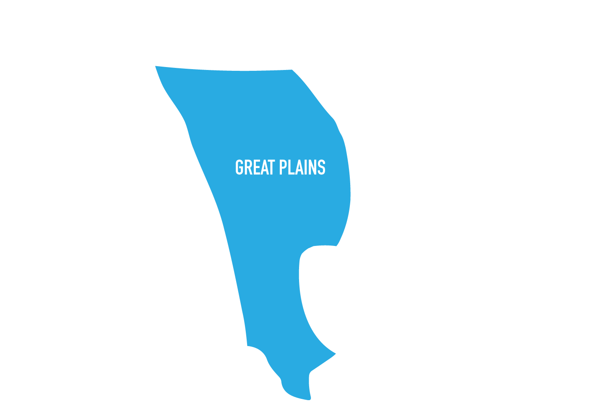
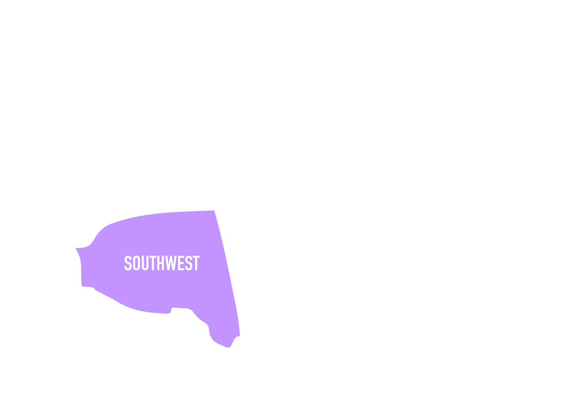
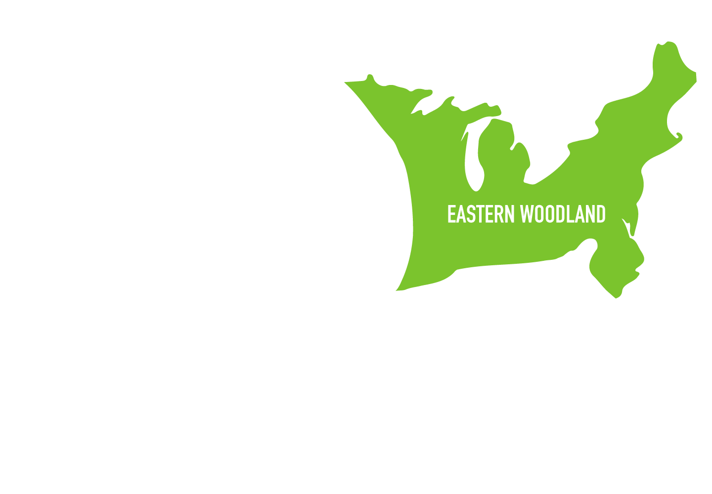
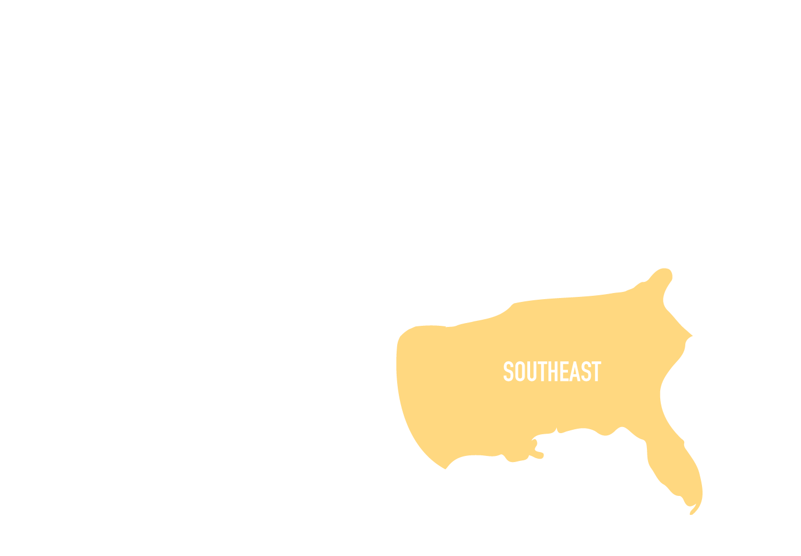
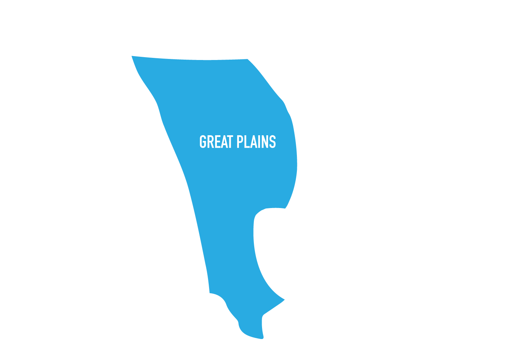
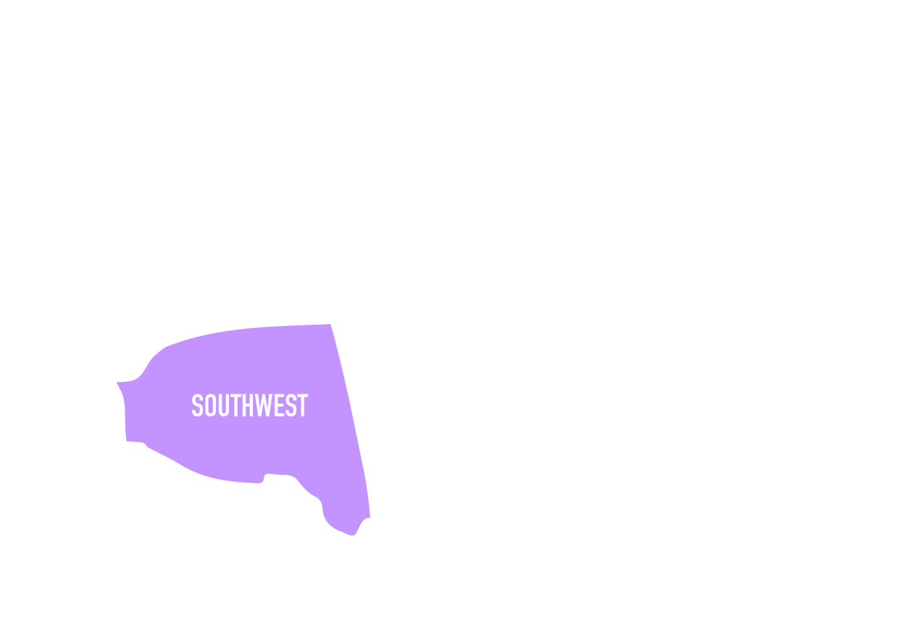

Welcome to the start of U.S. History! For each period, we will be outlining the basics, including any major events that should be remembered and what you should take away from the time period.
Period 1 includes the very beginning (I mean obviously, right?), from when Columbus sailed the ocean blue (in 1492) to the formation of the first colony of Jamestown (AP: This is only 5% of your exam so don’t stress out too much about this time period).
Let’s start off by talking about the original Americans. That’s right, we’re talking about Native Americans.
The United States is the way it is because of the Era of Exploration. European countries wanted to expand their power through obtaining more territory and sent explorers on their way to conquer lands. The plan worked and European countries such as Spain, Portugal, Britain, and France ended up with their own colonies (but many natives were killed in the process so it wasn’t the best plan).
Bottom Line: Maize played a huge part in the diet of Native Americans. Each region had a different group that utilized the different environments around them.
The Era of Exploration led Europeans to the Americas to colonize them. By doing so, the Columbian Exchange introduced crops, animals, and diseases to each party and effectively killed many natives.